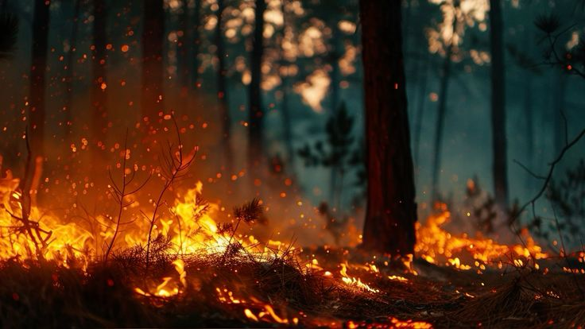
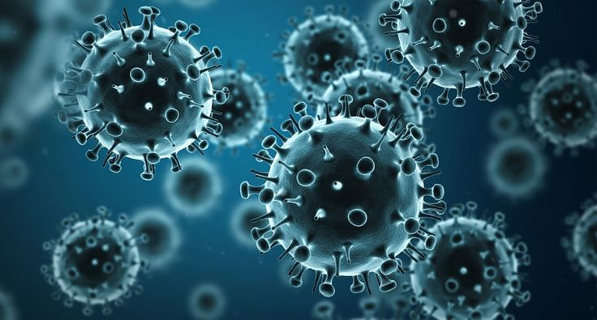

A Crise Climática: Entendendo os Desafios do Nosso Tempo
O Aquecimento Global e Suas Causas
O aquecimento global é, sem dúvida, o ponto central da crise climática que enfrentamos. Ele se refere ao aumento gradual e contínuo da temperatura média da superfície da Terra e dos oceanos ao longo do tempo. Embora o planeta sempre tenha passado por ciclos naturais de aquecimento e resfriamento, o que observamos hoje é uma aceleração sem precedentes desse processo, com consequências que já afetam e continuarão a moldar o nosso futuro.

O Fenômeno do Aquecimento Global: Uma Explicação Simples
Para entender o aquecimento global, precisamos primeiro compreender o que é o "efeito estufa". A atmosfera terrestre funciona como uma espécie de cobertor natural, retendo parte do calor do sol e mantendo o planeta aquecido o suficiente para a vida. Sem esse efeito, a Terra seria um bloco de gelo inabitável. A energia solar atravessa a atmosfera, aquece a superfície e parte desse calor é irradiada de volta para o espaço. Contudo, certos gases presentes na atmosfera têm a capacidade de absorver essa radiação infravermelha (calor), impedindo que ela escape totalmente e reenviando-a para a superfície. É esse processo que mantém a Terra em uma temperatura média de cerca de 15°C, em vez de -18°C. O problema surge quando a concentração desses gases aumenta demais, intensificando o efeito estufa a um nível artificial e perigoso, levando ao aquecimento excessivo.
Gases de Efeito Estufa: Os Vilões da História
Os principais responsáveis pelo aumento da temperatura são os chamados Gases de Efeito Estufa (GEE). Embora muitos deles ocorram naturalmente, suas concentrações na atmosfera têm sido drasticamente elevadas por atividades humanas. Os mais importantes são:
- Dióxido de Carbono (CO_2): É o GEE mais abundante e o principal contribuinte para o aquecimento global. Liberado principalmente pela queima de combustíveis fósseis (carvão, petróleo e gás natural) para energia, transporte e indústria, além do desmatamento.
- Metano (CH_4): Mais potente que o CO_2 no curto prazo, é emitido pela decomposição de matéria orgânica (lixões), pecuária e extração de combustíveis fósseis.
- Óxido Nitroso (N_2O): Resulta principalmente do uso de fertilizantes na agricultura, processos industriais e queima de combustíveis fósseis.
- Gases Fluorados (HFCs, PFCs, SF_6): Gases sintéticos usados em refrigeração, aerossóis e processos industriais. Embora em menor volume, têm um potencial de aquecimento global milhares de vezes maior que o CO_2.
A Responsabilidade Humana: Uma Questão de Ação
A vasta maioria da comunidade científica global concorda que as atividades humanas são a principal causa do rápido aquecimento global observado desde a Revolução Industrial. A queima em massa de combustíveis fósseis para gerar eletricidade, movimentar veículos e abastecer indústrias, além do desmatamento em larga escala (que libera CO_2 armazenado em árvores e impede a absorção futura), são os motores desse processo. A agricultura intensiva, o manejo de resíduos e outros processos industriais também contribuem significativamente. Em essência, nosso modelo de desenvolvimento e consumo baseado em recursos não renováveis e em práticas insustentáveis está alterando a composição química da nossa atmosfera e, consequentemente, o equilíbrio térmico do planeta.
Consequências Gerais: Um Planeta em Mudança Acelerada
O aumento da temperatura média da Terra já está desencadeando uma série de impactos visíveis e preocupantes, que afetam todos os cantos do globo:
- Derretimento de Geleiras e Calotas Polares: Contribuindo para o aumento do nível do mar.
- Eventos Climáticos Extremos: Aumento na frequência e intensidade de ondas de calor, secas prolongadas, inundações, tempestades mais severas e incêndios florestais.
- Alterações nos Ecossistemas: Deslocamento de espécies, perda de biodiversidade, branqueamento de corais e desertificação de áreas férteis.
- Impactos na Saúde Humana: Aumento de doenças relacionadas ao calor, problemas respiratórios devido à poluição do ar e, como veremos em outra seção, a proliferação de doenças transmitidas por vetores ou até mesmo por fungos.
Essas são apenas algumas das manifestações de um sistema climático que está se desequilibrando rapidamente. Compreender as causas é o primeiro passo para buscar e implementar as soluções necessárias para mitigar esses impactos e adaptar-nos a um futuro em transformação.
Queimadas: Ciclos Viciosos e Devastação
As queimadas, em certos contextos, são parte de processos naturais de ecossistemas, ajudando na regeneração de algumas florestas. No entanto, o que temos presenciado nas últimas décadas é uma drástica alteração nesse padrão, com incêndios florestais se tornando mais frequentes, maiores e incontroláveis. Longe de serem eventos isolados, essas megaincêndios são um dos rostos mais visíveis e devastadores do apocalipse climático, criando um ciclo vicioso de destruição e agravação das mudanças climáticas.
Como as Mudanças Climáticas Intensificam as Queimadas
A relação entre mudanças climáticas e a intensificação das queimadas é um ciclo perverso e autodestrutivo. O aquecimento global cria um cenário propício para a ignição e a propagação do fogo de diversas formas:
- Aumento das Temperaturas: Temperaturas mais altas, tanto do ar quanto do solo, secam a vegetação de forma mais rápida e profunda, transformando florestas e vegetação rasteira em "combustível" altamente inflamável. As ondas de calor prolongadas exacerbam essa condição.
- Secas Mais Severas e Duradouras: As alterações nos padrões de chuva levam a períodos de seca mais extensos em muitas regiões. A falta de água no solo e na vegetação deixa as plantas mais vulneráveis ao fogo.
- Ventos Fortes e Irregulares: Mudanças nos padrões climáticos podem gerar ventos mais intensos e erráticos. O vento é um grande aliado do fogo, transportando brasas e fagulhas por grandes distâncias, o que facilita o surgimento de novos focos e a propagação rápida de incêndios.
- Vulnerabilidade da Vegetação: Espécies vegetais, já estressadas pelo calor e pela falta de água, tornam-se mais suscetíveis à ignição, e a biomassa seca se acumula, aguardando uma faísca. A própria diminuição da umidade do ar contribui para isso.
- Temporadas de Incêndio Prolongadas: O aumento das temperaturas médias e as secas estendem o período em que as condições são favoráveis para incêndios, tornando as "temporadas de fogo" mais longas e perigosas.
Impacto na Biodiversidade e na Saúde Humana
As consequências das queimadas vão muito além da paisagem carbonizada. Seus impactos são profundos e multifacetados, afetando diretamente a biodiversidade e a saúde humana:
- Devastação da Biodiversidade: Incêndios em grande escala destroem habitats inteiros, forçando a fuga ou matando animais de todas as espécies, desde insetos até mamíferos de grande porte. Plantas nativas são erradicadas, levando à perda irreparável de espécies e à alteração permanente de ecossistemas delicados, como a Amazônia e o Pantanal, que abrigam uma riqueza biológica única no mundo. A recuperação desses ecossistemas pode levar décadas ou séculos, e algumas espécies podem nunca se recuperar.
- Degradação do Solo: O fogo consome a camada orgânica superficial do solo, que é essencial para sua fertilidade e capacidade de reter água. Isso leva à erosão, infertilidade e desertificação, dificultando a recuperação da vegetação e tornando o solo mais suscetível a novos incêndios e outros desastres.
- Qualidade do Ar e Saúde Respiratória: A fumaça das queimadas libera uma enorme quantidade de poluentes atmosféricos, incluindo material particulado fino, monóxido de carbono e diversos compostos tóxicos. Essa fumaça se espalha por centenas ou milhares de quilômetros, causando problemas respiratórios graves (asma, bronquite), irritação nos olhos, garganta e pele, e agravando condições de saúde existentes em populações distantes do fogo. Em casos extremos, a poluição do ar pode levar a hospitalizações e mortes.
- Saúde Mental e Deslocamento: Comunidades diretamente afetadas enfrentam o trauma da perda de lares, meios de subsistência e até entes queridos. O estresse pós-traumático, a ansiedade e a depressão são consequências comuns. Além disso, as queimadas forçam o deslocamento de comunidades inteiras, criando crises humanitárias e sociais.
- Impactos Econômicos: A destruição de florestas, áreas agrícolas, infraestrutura e propriedades causa prejuízos econômicos bilionários, afetando indústrias como o turismo, a agricultura e a exploração madeireira sustentável.
Exemplos de Desastres Recentes: Um Alerta Global
Os últimos anos têm sido marcados por uma série de megaincêndios que servem como um alerta global para a urgência da crise climática. Regiões como a Amazônia brasileira e o Pantanal, na América do Sul, têm sofrido com incêndios recordes, muitos deles relacionados ao desmatamento ilegal e às condições climáticas extremas. Na Austrália, as temporadas de incêndio tornaram-se cataclísmicas, devastando milhões de hectares e dizimando populações de animais. A Califórnia, nos Estados Unidos, e o Canadá também têm enfrentado incêndios de proporções sem precedentes, que lançam fumaça por continentes e causam bilhões em prejuízos. Esses exemplos trágicos são um lembrete contundente de que as queimadas são uma manifestação direta da forma como o desequilíbrio climático está redefinindo o nosso planeta.
Camada de Ozônio: Uma Vitória e Novos Desafios
Enquanto o aquecimento global domina as discussões sobre a crise climática, é fundamental recordar outra grande ameaça ambiental que, em grande parte, a humanidade conseguiu reverter: a destruição da camada de ozônio. Sua história é um poderoso lembrete da capacidade de ação coletiva diante de um desafio global, mas também serve de alerta para a vigilância contínua sobre a complexidade da nossa atmosfera.

O Que É a Camada de Ozônio e Qual a Sua Importância Vital?
A camada de ozônio é uma região da estratosfera terrestre (entre 10 e 50 km de altitude) com uma alta concentração de moléculas de ozônio (O_3). Embora seja uma parte relativamente pequena da nossa atmosfera, seu papel é absolutamente vital para a vida na Terra. Ela funciona como um filtro natural, absorvendo a maior parte da perigosa radiação ultravioleta (UV-B) emitida pelo sol.
Sem essa camada protetora, a radiação UV-B atingiria a superfície em níveis muito mais elevados, causando uma série de danos irreversíveis:
- Para a Saúde Humana: Aumento exponencial de casos de câncer de pele, catarata e supressão do sistema imunológico.
- Para Ecossistemas: Danos ao fitoplâncton (base da cadeia alimentar marinha), redução da produtividade agrícola (afetando a segurança alimentar) e prejuízos a diversas espécies de plantas e animais.
Em suma, a camada de ozônio é o nosso escudo protetor invisível, essencial para a manutenção da vida como a conhecemos.
A História da "Crise do Ozônio" e Sua Notável Recuperação
Na década de 1970, cientistas começaram a alertar sobre o potencial destrutivo de certas substâncias químicas criadas pelo homem, especialmente os Clorofluorcarbonetos (CFCs). Usados amplamente em aerossóis, refrigeradores, aparelhos de ar condicionado e espumas plásticas, os CFCs são gases inertes na baixa atmosfera, mas ao atingirem a estratosfera, a radiação UV os decompõe, liberando átomos de cloro. Cada átomo de cloro pode destruir milhares de moléculas de ozônio, criando um "buraco" na camada protetora.
A descoberta do "buraco" na camada de ozônio sobre a Antártida, na década de 1980, gerou um alarme global. Felizmente, a resposta internacional foi rápida e decisiva. Em 1987, foi assinado o Protocolo de Montreal sobre Substâncias que Destroem a Camada de Ozônio. Este acordo histórico, ratificado por quase todos os países do mundo, estabeleceu metas para a eliminação progressiva da produção e consumo de CFCs e outras substâncias danosas à camada de ozônio.
Considerado um dos mais bem-sucedidos tratados ambientais da história, o Protocolo de Montreal resultou em uma redução drástica das emissões dessas substâncias. Como consequência, a camada de ozônio tem mostrado sinais claros de recuperação, com projeções de que o buraco sobre a Antártida se feche completamente por volta de 2060-2070. Esta é uma prova notável de que a ciência, a cooperação internacional e a vontade política podem, de fato, reverter grandes problemas ambientais.
Ozônio e Aquecimento Global: Distinções e Interconexões no Panorama Ambiental
É comum confundir a questão da camada de ozônio com o aquecimento global, mas é crucial entender suas distinções, embora ambas estejam ligadas à atmosfera e à atividade humana:
- Camada de Ozônio: É um problema de destruição de uma camada protetora específica na estratosfera, causada principalmente por CFCs e halons, que permite a entrada de radiação UV prejudicial.
- Aquecimento Global: É um problema de superaquecimento da baixa atmosfera (troposfera), causado pelo acúmulo excessivo de Gases de Efeito Estufa (GEE) como CO_2 e metano, que retêm calor.
Em outras palavras, a crise do ozônio era sobre um "buraco" que deixava algo entrar, enquanto o aquecimento global é sobre um "cobertor" que não deixa o calor sair.
No entanto, há algumas interconexões:
- Gases Compartilhados: Alguns gases que destroem a camada de ozônio (como os HFCs, que substituíram os CFCs) são também potentes GEEs. O Protocolo de Montreal foi expandido para controlar os HFCs, o que também contribui para o combate ao aquecimento global.
- Impactos Cruzados: As mudanças climáticas podem afetar a recuperação da camada de ozônio de formas complexas. Por exemplo, o resfriamento da estratosfera (causado pelo aquecimento da troposfera) pode, em certas condições, atrasar a recuperação do ozônio em algumas regiões.
A história da camada de ozônio é um farol de esperança: ela demonstra que a humanidade tem a capacidade de identificar uma ameaça ambiental global, mobilizar esforços científicos e políticos, e implementar soluções eficazes. Contudo, ela também nos lembra da imensa complexidade do nosso planeta e da necessidade urgente de aplicar as lições aprendidas à ainda mais desafiadora crise do aquecimento global.
A Onda Verde: Epidemias, Fungos e a Nova Frente de Combate
Quando pensamos nos impactos do apocalipse climático, as imagens mais comuns são as de secas, inundações, queimadas ou o derretimento de geleiras. No entanto, as mudanças climáticas estão abrindo portas para uma frente de batalha menos óbvia, mas igualmente ameaçadora: a proliferação de doenças e patógenos. Essa é a "onda verde" dos perigos biológicos, uma dimensão crucial da crise climática que exige atenção urgente.
O Inimigo Silencioso: Como o Clima Altera o Cenário das Doenças
As mudanças climáticas não afetam apenas o clima que sentimos, mas também a vida microscópica ao nosso redor. Fungos, bactérias, vírus e seus vetores (como insetos e roedores) são extremamente sensíveis às condições ambientais. O aquecimento global e as alterações nos padrões de chuva e temperatura estão criando um cenário propício para que esses microrganismos e seus hospedeiros:
- Expandam Seus Alcances Geográficos: Patógenos que antes estavam confinados a regiões tropicais ou subtropicais podem agora sobreviver e prosperar em áreas mais temperadas que se tornam mais quentes. Isso significa que doenças como a dengue, malária e zika, por exemplo, podem chegar a lugares onde antes não eram um problema.
- Acelere Seus Ciclos de Vida: Temperaturas mais elevadas podem acelerar o ciclo de vida de insetos vetores (como mosquitos) e o ritmo de replicação de patógenos dentro deles, tornando-os mais eficientes na transmissão de doenças.
- Aumente Sua Virulência: Em alguns casos, as novas condições ambientais podem até mesmo influenciar a capacidade dos patógenos de causar doenças mais graves ou a resistência a tratamentos.
- Libere Patógenos Antigos: O derretimento do permafrost (solo permanentemente congelado) em regiões polares levanta a preocupação sobre a liberação de vírus e bactérias antigos que estavam "adormecidos" por milhares de anos, para os quais a humanidade não tem imunidade ou tratamento.
Fungos Patogênicos: Ameaça Real Inspirada na Ficção
Um exemplo alarmante e crescente dessa nova fronteira de ameaças biológicas é a proliferação de fungos patogênicos. Diferente de bactérias e vírus, muitos fungos evoluíram em ambientes de temperaturas mais baixas e tinham dificuldade em infectar mamíferos de sangue quente como os humanos. No entanto, a adaptação a um planeta mais quente pode mudar esse cenário.
Um estudo recente, que ganhou destaque na mídia, alertou para a expansão significativa de fungos do gênero Aspergillus, um dos principais causadores de infecções graves em humanos. A pesquisa da Universidade de Manchester prevê que o Aspergillus flavus, por exemplo, poderá expandir sua presença em até 77,5% até 2100, atingindo regiões mais frias que antes eram imunes, como o norte da Europa e da Ásia. Esses organismos liberam esporos microscópicos no ar e podem causar infecções graves, especialmente em pessoas com imunidade comprometida (conhecidas como aspergilose), que têm altas taxas de mortalidade.
O tema ganhou uma visibilidade popular sem precedentes com a série "The Last of Us", que retrata um fungo mutante transformando humanos em criaturas perigosas. Embora a ficção seja uma dramatização e exagero, ela serviu para chamar a atenção do público para os perigos reais e subestimados das infecções fúngicas. A matéria da CNN Brasil aprofunda essa preocupação: Fungo fatal de 'The Last of Us' vai se espalhar pelo mundo, diz estudo.

Um Mundo Despreparado para Patógenos Silenciosos
O alerta da comunidade científica é claro: o mundo está perigosamente despreparado para lidar com a expansão desses "patógenos silenciosos". Infecções fúngicas, por exemplo, já são responsáveis por cerca de 2,5 milhões de mortes por ano globalmente, e a resistência a medicamentos antifúngicos está crescendo.
As ameaças do apocalipse climático, portanto, vão muito além das catástrofes naturais visíveis. Elas se infiltram no nível microscópico, alterando os equilíbrios biológicos e abrindo caminho para novas epidemias e pandemias para as quais nossos sistemas de saúde, muitas vezes, não têm respostas adequadas ou conhecimento suficiente. Reconhecer essa dimensão é crucial para que possamos investir em pesquisa, desenvolver novos tratamentos e, acima de tudo, intensificar o combate às mudanças climáticas como a causa raiz dessa nova e perigosa "onda verde" de desafios.